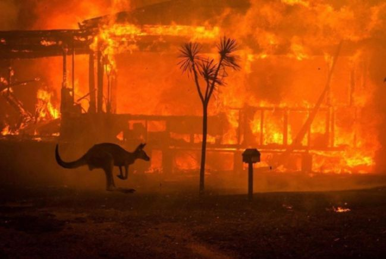
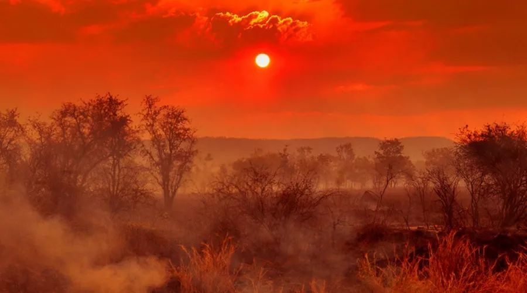
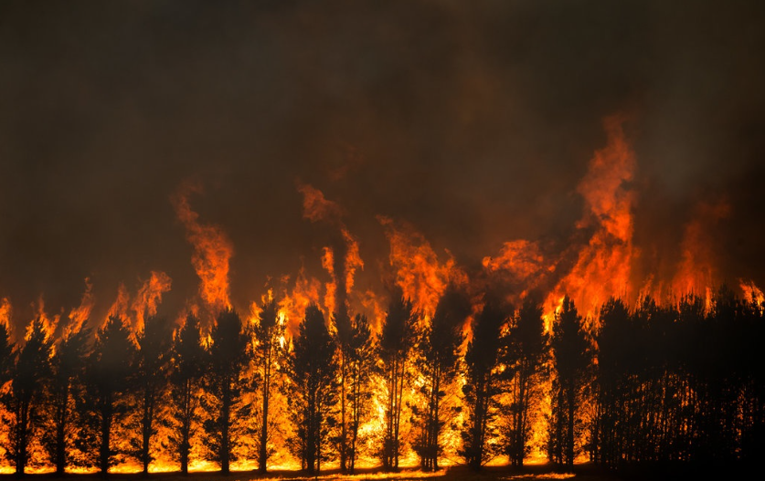

Bushfire in Australia
(1) Background

• Bushfires, frequently occur in Australia during the hot and dry season, destroying large areas of land and causing property damage.
• However, heatwaves, droughts, and periodic climate shifts such as El Nino and the Indian Ocean dipole all contribute significantly to the bushfire crisis (Neil, 2019).
• This disaster is usually caused by lightning or deliberate arson. • However, heatwaves, droughts, and periodic climate shifts such as El Nino and the Indian Ocean dipole all contribute significantly to the bushfire crisis (Neil, 2019).
• Record high temperatures and long droughts have contributed to bushfires, which have become more difficult to contain in 2019-2020. 
(2) Motivation
• Are there any weather conditions that affect the bushfire in Australia?• Or we can take advantage of some weather conditions to control the bushfires?

Which regions in Australia were the most affected by the bushfire?
Australian Capital Territory
New South Wales
Northern Territory
Queensland
South Australia
Tasmania
Victoria
Western Australia
Australian Capital Territory
New South Wales
Northern Territory
Queensland
South Australia
Tasmania
Victoria
Western Australia
This page Next page